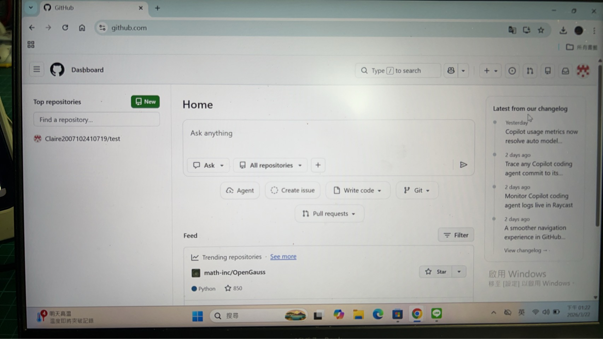

記錄科學探索的腳步與心得

學習如何正確操作游標尺，測量不同物體（如硬幣、光碟）的厚度與直徑，並計算平均值、A類與B類不確定度，從而得出完整的測量結果與誤差分析。
利用半圓形透明塑膠盒、水與插針法，觀察光線由空氣進入水中的偏折情形。透過角度測量，實踐折射定律（Snell's Law）並計算出水的折射率實驗值。
在光學平台上，調整光源、凸透鏡與光屏的位置，觀察不同物距（如物體在焦點外、焦點上、焦點內）所形成的實像與虛像，驗證透鏡成像公式。